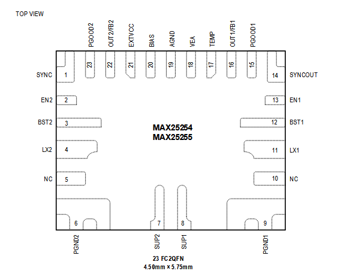

MAX25254 / MAX25255

Pin Description
| PIN | NAME | FUNCTION |
|---|---|---|
| 1 | SYNC | Synchronization Input. Connect SYNC to AGND to enable skip mode. Connect SYNC to high to enable FPWM mode. It can also be used to synchronize to an external clock. |
| 2 | EN2 | Enable Input for Buck2. Drive EN2 high/low to enable/disable Buck2. EN2 can be connected directly to the battery for always-ON applications. |
| 3 | BST2 | Integrated High-Side MOSFET Gate Drive Supply. Connect a 0.1μF ceramic capacitor between BST2 and LX2 for proper operation. |
| 4 | LX2 | Buck2 Inductor Connection. Connect an inductor from LX2 to Buck2 output. LX2 is high impedance when Buck2 is disabled. |
| 5 | NC | Not Connected |
| 6 | PGND2 | Buck2 Power Ground. Make sure that PGND2 is connected to the ground plane with enough vias for optimum thermal performance. |
| 7 | SUP2 | Buck2 High-Side MOSFET Supply. Bypass SUP2 to PGND2 with 0.1μF and 4.7μF ceramic capacitors as close as possible. |
| 8 | SUP1 | Buck1 High-Side MOSFET and BIAS LDO Supply. Bypass SUP1 to PGND1 with 0.1μF and 4.7μF ceramic capacitors as close as possible. |
| 9 | PGND1 | Buck1 Power Ground. Make sure that PGND1 is connected to the ground plane with enough vias for optimum thermal performance. |
| 10 | NC | Not Connected |
| 11 | LX1 | Buck1 Inductor Connection. Connect an inductor from LX1 to the Buck1 output. LX1 is high impedance when Buck1 is disabled. |
| 12 | BST1 | Integrated High-Side MOSFET Gate Drive Supply. Connect a 0.1μF ceramic capacitor between BST2 and LX2 for proper operation. |
| 13 | EN1 | Enable Input for Buck1. Drive EN1 high/low to enable/disable Buck1. EN1 can be connected directly to the battery for always-ON applications. |
| 14 | SYNCOUT | 90° Out-of-Phase Clock Output. Connect SYNCOUT of the primary IC to SYNC of the secondary IC for quad-phase operation. Multiphase operation is designed for PWM mode. No clock is present on SYNCOUT in skip mode or with external clock synchronization. |
| 15 | PGOOD1 | Buck1 Open-Drain Power-Good Output. Connect PGOOD1 to BIAS or an external voltage rail with a pull-up resistor. PGOOD1 is pulled to ground during startup, Buck1 output undervoltage, or overvoltage. |
| 16 | OUT1/FB1 | Buck1 Output Sense/Feedback Input. In the fixed output version, connect OUT1 to the Buck1 output to set the fixed output voltage. In the adjustable output version, connect FB1 to a resistor-divider between the Buck1 output and AGND to program the output voltage between 0.8V and 14V. FB1 is regulated to 0.8V (typ) in the adjustable version. |
| 17 | TEMP | Die Temperature Monitoring Node. The voltage at TEMP is proportional to the IC die temperature. |
| 18 | VEA | Error Amplifier Output for Multiphase Operation. When two MAX25255 ICs are used in parallel for 4-phase operation, tie both VEA nodes together for phase balancing. Leave VEA open in single-IC operation. |
| 19 | AGND | Analog Ground. All of the sensitive analog signals are internally referenced to analog ground. Care must be taken during layout to ensure that AGND is routed in the quiet section of the PCB. |
| 20 | BIAS | Internal Linear Regulator Output. Bypass BIAS with a 4.7μF (min) capacitor to AGND. BIAS supplies the internal gate drive circuitry and is not for external use. |
| 21 | EXTVCC | Switchover Input. When valid voltage is present at EXTVCC, EXTVCC supplies the internal BIAS LDO after soft-start is complete. If the EXTVCC voltage is not valid, or it is tied to ground, the BIAS LDO is supplied by SUP1. Bypass EXTVCC with a 2.2μF ceramic capacitor. |
| 22 | OUT2/FB2 | Buck2 Output Sense/Feedback Input. In the fixed output version, connect OUT2 to the Buck2 output to set the fixed output voltage. In the adjustable output version, connect FB2 to a resistor-divider between the Buck2 output and AGND to program the output voltage between 0.8V and 14V. FB2 is regulated to 0.8V (typ) in the adjustable output version |
| 23 | PGOOD2 | Buck2 Open-Drain Power-Good Output. Connect PGOOD2 to BIAS or an external voltage rail with a pull-up resistor. PGOOD2 is pulled to ground during startup, Buck2 output undervoltage, or overvoltage. |